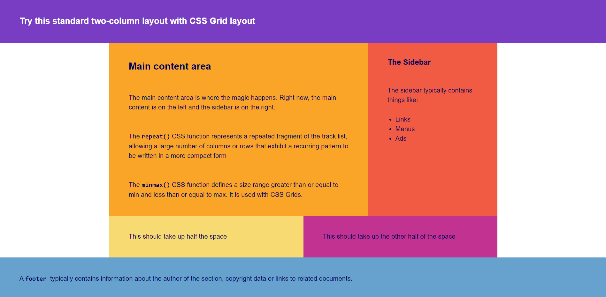

Sedan utbildningens start har jag fått arbeta med en hel del CSS/HTML. Jag fick bland annat öva på både CSS och HTML redan på den första workshopen. Då fick jag skapa en mindre webbsida som visar ett recept på en soppa tillsammans med flera listor, däribland en lista på ingredienser, samt en bild av soppan.
Jag har även experimenterat med flexbox. På en workshop gjorde jag en webbsida flexibel och responsiv med hjälp av flexbox. Flexibilitet är något som idag är ett måste för en modern webbsida. Ett exempel på en sida som använder sig av flexbox är den här webbsidan.
Förutom flexbox har jag även arbetat med grid. Det gjorde jag på den senaste workshopen då jag fick i uppdrag att justera ett par webbsidor till att använda grid. Här nedan följer en bild på en av webbsidorna:
Till sist har jag även fått arbeta med media queries, funktionen som gör det möjligt för webbsidors innehåll att kunna anpassa sig till olika skärmupplösningar.
På en workshop fick jag bland annat justera en webbsida så att den blev anpassningbar till olika förhållanden som t.ex. dator, surfplatta samt mobiltelefon. Den här webbsidan är ett exempel på en webbsida som kan anpassa sig till både dator och mobiltelefon.